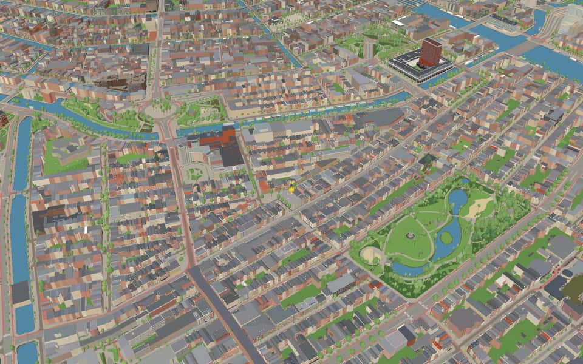
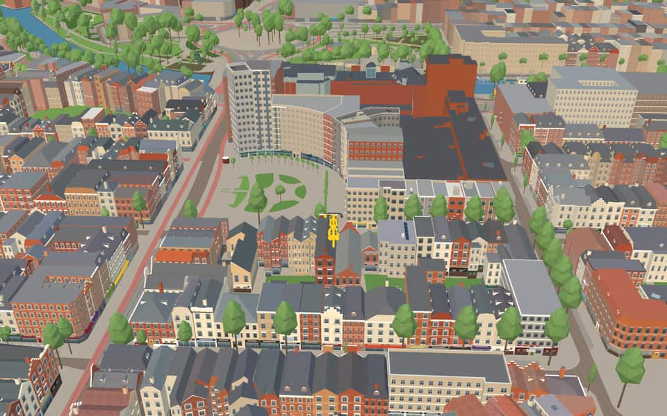
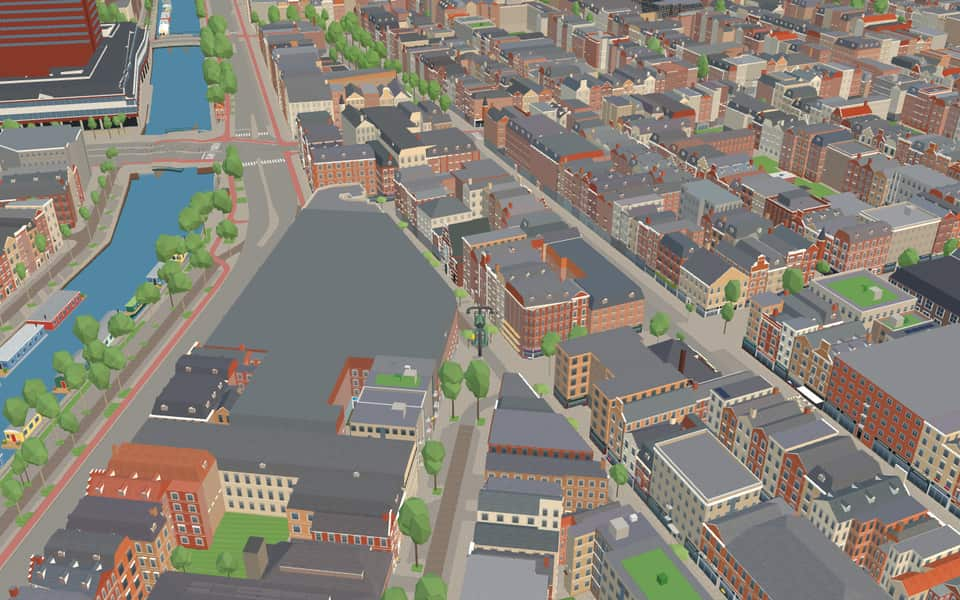
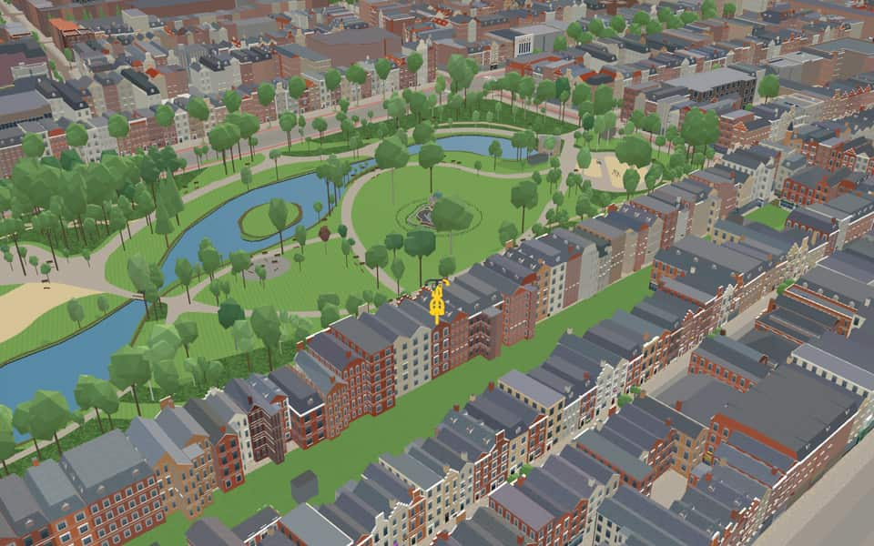

Neighbourhood in De Pijp
Oude Pijp
Oude Pijp (Dutch for "Old Pipe"), also known as Noord-Pijp (Dutch for "North-Pipe") is a neighbourhood of Amsterdam, Netherlands located in an urbanised part of the Zuid borough. Together with Nieuwe Pijp, Oude Pijp forms De Pijp. en.wikipedia.org
Ride Oude Pijp30 modelled buildings · 26 facts · 33 name stories


In the game
Frames from a ride through Oude Pijp.




6 more photos of Oude Pijp


.jpg){kind=link}


.jpg){kind=link}
Built here
Buildings modelled one by one for the ride.
Heineken Experience
Gerard Dou Synagogue
Sarphatimonument
- No picture yet
Albert Cuypstraat 156E to 142B (8 houses)
- No picture yet
Eerste Jacob van Campenstraat 12 to 6 (4 houses)
- No picture yet
Van Woustraat 70 to 64 (4 houses)
- No picture yet
Albert Cuypstraat 124 to 122A (3 houses)
- No picture yet
Albert Cuypstraat 210 to 206 (3 houses)
- No picture yet
Eerste Jan Steenstraat 94 to 90 (3 houses)
- No picture yet
Eerste Van der Helststraat 45 to 49 (3 houses)
- No picture yet
Gerard Doustraat 168 to 164 (3 houses)
- No picture yet
Gerard Doustraat 234 to 230 (3 houses)
- No picture yet
Ruysdaelkade 81 to 85 (3 houses)
- No picture yet
Van Woustraat 20 to 16 (3 houses)
- No picture yet
Van Woustraat 46 to 42A (3 houses)
- No picture yet
Albert Cuypstraat 162 to 160 (2 houses)
- No picture yet
Albert Cuypstraat 82 to 80 (2 houses)
- No picture yet
Eerste Jacob van Campenstraat 37 to 39 (2 houses)
- No picture yet
Eerste Van der Helststraat 51 to 53 (2 houses)
- No picture yet
Eerste Van der Helststraat 62A to 62 (2 houses)
- No picture yet
Eerste Van der Helststraat 68 to 66 (2 houses)
- No picture yet
Ferdinand Bolstraat 14 to 12 (2 houses)
- No picture yet
Ferdinand Bolstraat 26 to 24 (2 houses)
- No picture yet
Saenredamstraat 66 to 64 (2 houses)
6 more modelled buildings
- Tweede Jan van der Heijdenstraat 4 to 2 (2 houses) Surveyed street front
- Van Woustraat 36 to 34 (2 houses) Surveyed street front
- Van Woustraat 58 to 56 (2 houses) Surveyed street front
- Van Woustraat 92 to 90 (2 houses) Surveyed street front
- Heinekenplein block, Amsterdam (De Pijp) Modelled building
- Quellijnstraat 36, Amsterdam-Zuid (Weteringbuurt / Quellijnkwartier) Modelled building
Did you know
Trivia the ride can show you here.
- The Albert Cuyp Market became an official market in 1905, after the street trading had grown chaotic. Wikipedia
- The old part of De Pijp is known as Amsterdam's Quartier Latin, after the Paris district. Wikipedia (translated from Dutch)
- The Heineken Experience is the first Heineken brewery, built in 1867, which brewed here until 1988. Wikipedia
- The Liefdesbruggetje (‘little love bridge’) owes its name to its popularity as a backdrop for wedding photos. Wikipedia (translated from Dutch)
- Under German occupation Sarphatipark was renamed Bollandpark and Sarphati's bust removed from the Sarphatimonument. Wikipedia (translated from Dutch)
- Jacob Israël de Haan's novel Pijpelijntjes (1904) is set in the Oude Pijp around 1900. Wikipedia (translated from Dutch)
- The Albert Cuyp Market and its street are named after the 17th-century painter Albert Cuyp. Wikipedia
- De AteliersStudents are not called students but are officially referred to as participants. en.wikipedia.org
- Heineken ExperienceA larger modern facility replaced it on the city outskirts in 1988. en.wikipedia.org
- Heineken ExperienceTours of the original brewery began before the visitor centre officially opened in 1991. en.wikipedia.org
- SarphatimonumentThe round stone structure stands 12 meters high and is surrounded by a water basin with a diameter of 16 meters. nl.wikipedia.org
- SarphatimonumentDuring World War II the park was renamed Bollandpark and the bust was removed before being restored in 1945. nl.wikipedia.org
- Albert Cuyp marketCity officials formalized the chaotic stalls into an official market in 1905. en.wikipedia.org
- Carel WillinkplantsoenCarel Willinkplantsoen received its official name only in 1999. nl.wikipedia.org
12 more facts
- Carel WillinkplantsoenStadhouderskade makes a strange turn here to cross the Boerenwetering canal. nl.wikipedia.org
- Carel WillinkplantsoenMayor Schelto Patijn unveiled the statue on March 3, 2000. nl.wikipedia.org
- SarphatiparkPainter Mommie Schwarz lived nearby until his deportation and execution at Auschwitz in 1942. en.wikipedia.org
- LiefdesbruggetjeEngineer Jacobus van Niftrik designed the original rustic bridge in 1884. nl.wikipedia.org
- Ferdinand BolstraatFEBO, a famous Dutch fast-food chain, takes its name directly from Ferdinand Bolstraat. en.wikipedia.org
- Ferdinand BolstraatThe FEBO chain began in 1941 as a bakery named Maison FEBO. en.wikipedia.org
- Ferdinand BolstraatAlthough named after the street, the original Maison FEBO bakery was never actually located on Ferdinand Bolstraat. en.wikipedia.org
- Ferdinand BolstraatA bridge replaced a ferry over the Singelgracht canal in 1875, connecting the street to the city centre. en.wikipedia.org
- StadhouderskadeStadhouderskade was named in 1872 to honor stadholders William II and William III. nl.wikipedia.org
- StadhouderskadeA rainwater retention basin sits beneath the street near the Rijksmuseum. nl.wikipedia.org
- StadhouderskadeStadhouderskade 55 once housed a chapel, then the Van Nispenhuis which burned down before becoming the Willemshuis. nl.wikipedia.org
- StadhouderskadeA double symmetrical townhouse on Stadhouderskade may have been the home of pediatrician Sybren Schippers. nl.wikipedia.org
Names on the map
Where the canal, bridge and street names come from.
Bridges
- LiefdesbruggetjeThis bridge is called the Liefdesbruggetje (little bridge of love) because it is a favourite spot for wedding photos. From here you can look out over the park and the pond without seeing any buildings.Bridge 172: a steel bridge for pedestrians, dated 1921 in the city's bridge register.
Streets
- Albert CuypstraatLandscape and portrait painter (1620-1691). The street was laid out after the Zaagmolensloot was filled in. Until the second half of the nineteenth century, a number of timber sawmills stood here. In 2005 the Albert Cuypmarkt, which is held in this street, marked its hundredth anniversary.
- AmsteldijkA canal dug around 1920 as part of Berlage's Plan Zuid. It connects the river of the same name with a five-way junction of canals, including the Boerenwetering, the Noorder Amstelkanaal and the Zuider Amstelkanaal.
- CeintuurbaanAt the end of the nineteenth century a ring road (ceintuurweg, or belt) was laid around a large part of the city. The stretch between the Boerenwetering and the Amstel was later named Ceintuurbaan. The other stretches later got other names, because a section in between was not yet part of Amsterdam at the time.
- Daniël StalpertstraatDaniël Stalpaert (1615-1684), architect and draughtsman. He completed the city hall on the Dam designed by Jacob van Campen. As city architect he also designed, among others, the Admiralty building on Kattenburg (now the Maritime Museum), the Oosterkerk, the church on the Amstelveld, the synagogue on the corner of the Nieuwe Amstelstraat and the Huiszittenweduwenhof. As a surveyor he made a map of Amsterdam's fourth expansion.
- DusartstraatCornelis Dusart (1660-1704), painter and engraver, a pupil of Van Ostade.
- Eerste Jacob van CampenstraatArchitect (1595-1659), designer of the city hall on the Dam, now the Royal Palace, though he was not allowed to finish the work. Van Campen also built the Heiligewegspoort in 1636, and a palace in Rijswijk for Prince Frederik Hendrik in 1657. The split into Eerste and Tweede came after the stretch of street between them was sold to the Heineken brewery in 1930.
- Eerste Jan SteenstraatPainter (1626-1679), mostly of domestic scenes: merry, untidy interiors. That gave rise to the expression 'a Jan Steen household' (een huishouden van Jan Steen).
- Eerste Jan van der HeijdenstraatPainter and engineer (1637-1712), inventor of the fire engine with a hose and of a new model of street lamp. Painter of portraits and townscapes.
- Eerste SweelinckstraatJan Pieterszoon Sweelinck (1562-1621), a musician of great renown and organist of the Oude Kerk. He wrote many compositions on the psalms and love songs. Before 1896 part of the Tweede Sweelinckstraat lay in the municipality of Nieuwer-Amstel as the Tweede Hoedemakersdwarsstraat (council decision of Nieuwer-Amstel, 22 August 1890).
- Eerste Van der HelststraatBartholomeus van der Helst (1612-1670), painter of militia and regents' group portraits.
- Ferdinand BolstraatPainter (1616-1680), a pupil of Rembrandt, who painted portraits and regents' group portraits, among other things. (The boundary with the Gerard Doustraat was set more precisely by council decision of 9 June 1921.)
- Frans HalsstraatPainter (1580-1666) of portraits and militia group portraits.
20 more streets with a story
- Gerard DoupleinPainter (1613-1675), a representative of the Leiden school, a pupil of Rembrandt and teacher of, among others, Metsu and Van Mieris.
- Gerard DoustraatPainter (1613-1675), a representative of the Leiden school, a pupil of Rembrandt and teacher of, among others, Metsu and Van Mieris.
- Govert FlinckstraatPainter (1615-1660), a pupil of Rembrandt, known above all for his militia group portraits and portraits.
- HemonylaanThe brothers Frans Hemony (1609-1667) and Pieter Hemony (1619-1680), bell founders of the carillons in the Oude Kerk, the Zuiderkerk, the Westerkerk and the Munttoren.
- HemonystraatThe brothers Frans Hemony (1609-1667) and Pieter Hemony (1619-1680), bell founders of the carillons in the Oude Kerk, the Zuiderkerk, the Westerkerk and the Munttoren.
- Hercules SeghersstraatHercules Pieterszoon Seghers (1589-1638), etcher and landscape painter. Seghers's influence can be seen in the works of Rembrandt and Ruisdael. Only in the twentieth century did his manner of painting come to be highly valued.
- Marie HeinekenpleinPainter (1844-1930), mainly of flowers and still lifes, who held several exhibitions in Amsterdam between 1883 and 1899. She was a member of the Amsterdam artists' society 'Arti et Amicitiae'.
- Nicolaas BerchemstraatPainter (1620-1683), mainly of landscapes.
- OosteindeThe name refers to its position relative to the Utrechtsepoort (Utrecht gate), which stood in the middle of the Frederiksplein, where the Paleis voor Volksvlijt was later built. The street ran along the east side at the end of the city (outside the gate, inside the city moat). The street on the other side was then named Westeinde.
- QuellijnstraatArtus Quellijn or Quellinus (1609-1668), Southern Netherlandish sculptor, whose works include the sculpture for the city hall on the Dam.
- RuysdaelkadeA seventeenth-century family of painters and engravers, the best known of whom was Jacob Isaacksz. van Ruisdael (1628-1682), landscape painter and teacher of Hobbema. The street already existed under this name in the municipality of Nieuwer-Amstel before 1888.
- SaenredamstraatPieter Jansz. Saenredam (1597-1665), painter, whose works include 'Interior of the St Bavo Church' and 'The Old City Hall on the Dam'.
- SarphatiparkSamuel Sarphati (1813-1866), Amsterdam doctor and pharmacist with many connections in banking circles, who did much for the city. He drew up plans for extending the city around the Frederiksplein and beyond the Singelgracht, for which he founded the Nederlandsche Bouwmaatschappij in 1864. The societies and buildings that came about through him include the Society for Agriculture (1848), the Society for Industry (1852) with the Paleis voor Volksvlijt it built (1864), the School of Commerce, the National Mortgage Bank and the Amstel Hotel (1866). Before the Sarphatipark was named, the streets around it were parts of the Ceintuurbaan, Jan Steenstraat, Van der Helststraat and Sweelinckstraat.
- StadhouderskadeWhen this quay had to be named, it was two hundred years since Stadtholder William III had freed the country from the English, the French and the forces of Münster. Although Amsterdam was never very pro-stadtholder, this was reason enough to honour the stadtholders, alongside a Nassaukade and a Mauritskade: namely William II (1626-1650) and William III (1650-1702).
- Tweede Jacob van CampenstraatArchitect (1595-1659), designer of the city hall on the Dam, now the Royal Palace, though he was not allowed to complete the work. Van Campen also built the Heiligewegspoort in 1636 and worked on palaces for Prince Frederik Hendrik. The street was split into Eerste and Tweede after the stretch between them was sold to the Heineken brewery in 1930.
- Tweede Jan SteenstraatPainter (1626-1679), mostly of domestic scenes: merry, untidy interiors. That gave rise to the expression 'a Jan Steen household' (een huishouden van Jan Steen).
- Tweede Jan van der HeijdenstraatPainter and engineer (1637-1712), inventor of the fire engine with a hose and of a new model of street lamp. Painter of portraits and townscapes.
- Van WoustraatGeert van Wou (c. 1450-1527), renowned bell-founder from Kampen.
- WesteindeNamed after its position: west of the Utrechtsepoort.
- WeteringlaanThe streets lie in the Weteringbuurt. The names recall the Wetering, which originally flowed from outside into the Spui; the Boerenwetering is a remnant of it. The Schans was once the rampart on the inside of the city wall. In the first half of the nineteenth century the walls and ramparts were demolished. Parts were turned into promenades (Eerste and Tweede Weteringplantsoen), and a road was built that was at first called the Schans along its whole length but later renamed Marnixstraat, Weteringschans and Sarphatistraat. The Nieuwe Weteringstraat was laid out on the site freed by the demolition of the flour and bread factory.